best val NLL: 3.3890
name = 'ps_v9_overfit500' n_layers = 4 img_size = 64 in_channels = 3 use_convnext = True use_frustum = True epochs = 100 batch_size = 64 lr = 0.001 lr_min = 1e-06 n_overfit = 500
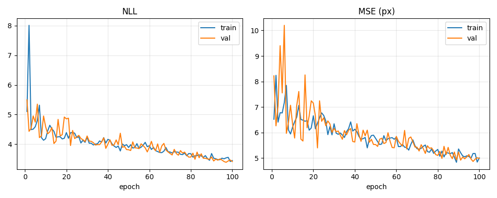
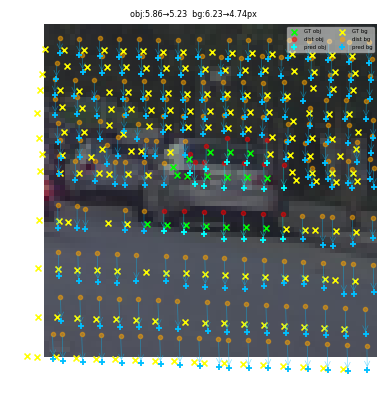
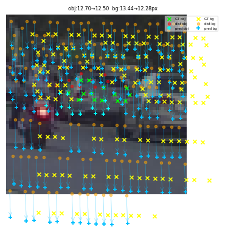
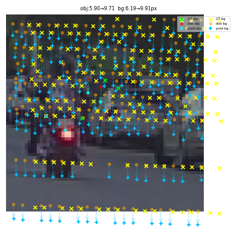
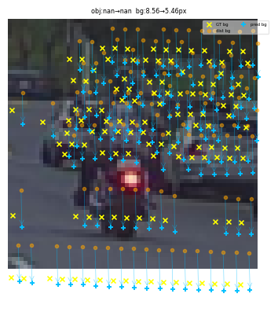
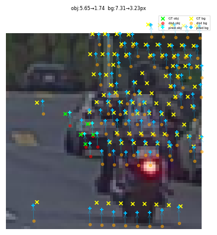
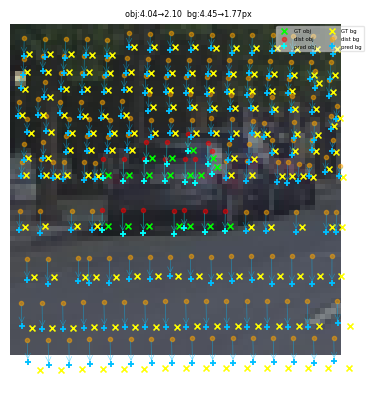
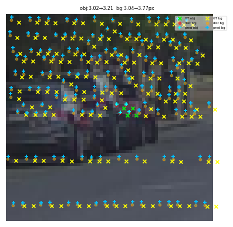
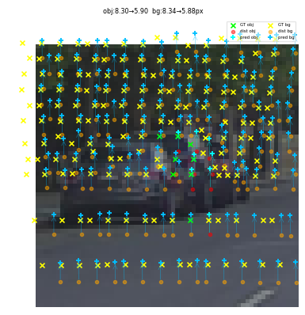
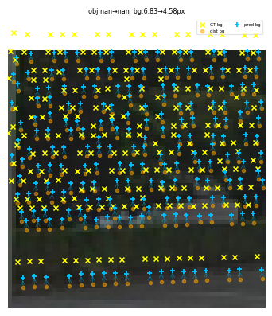
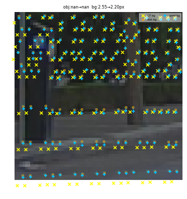
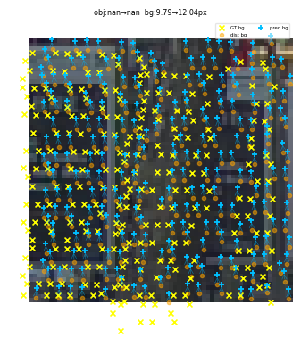
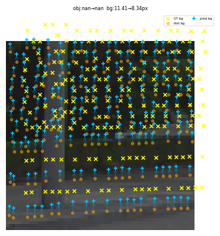